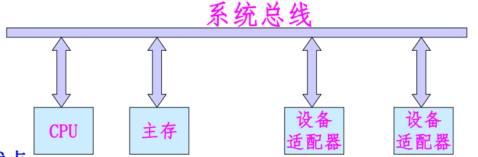
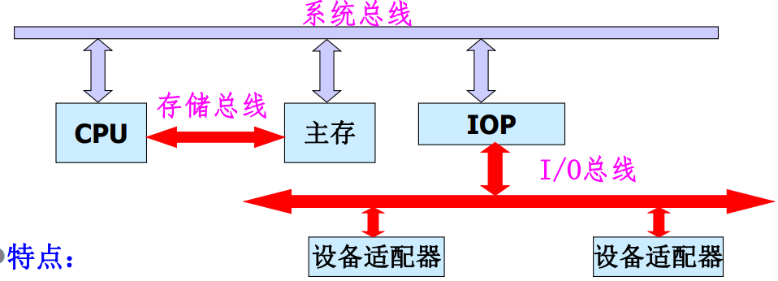
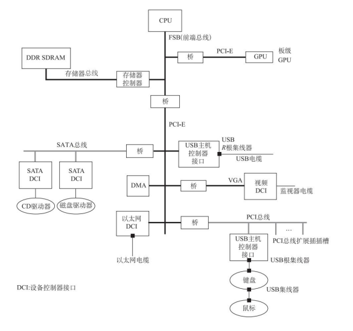
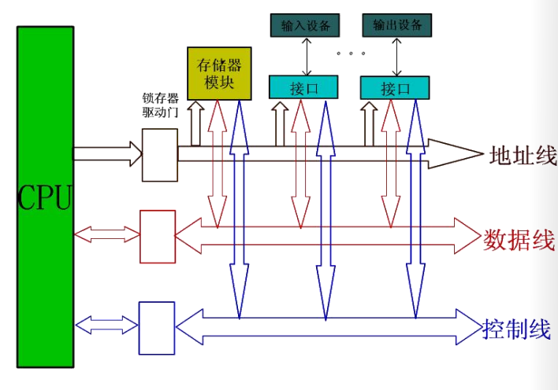
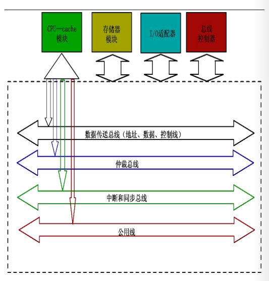
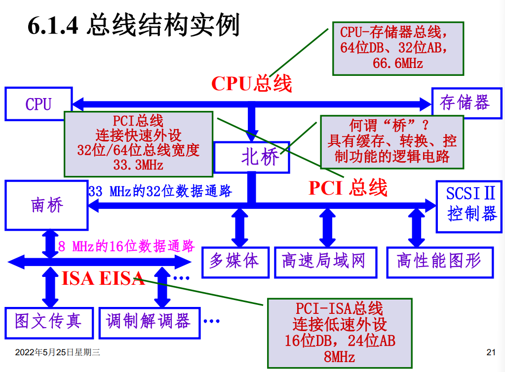
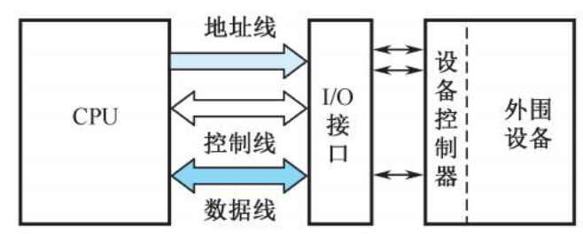
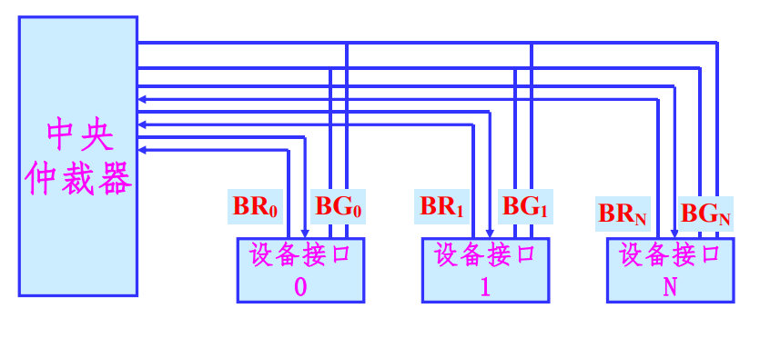
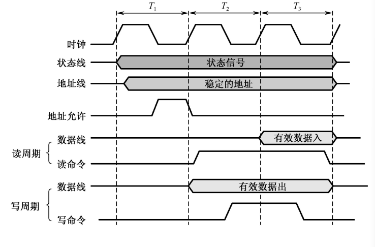
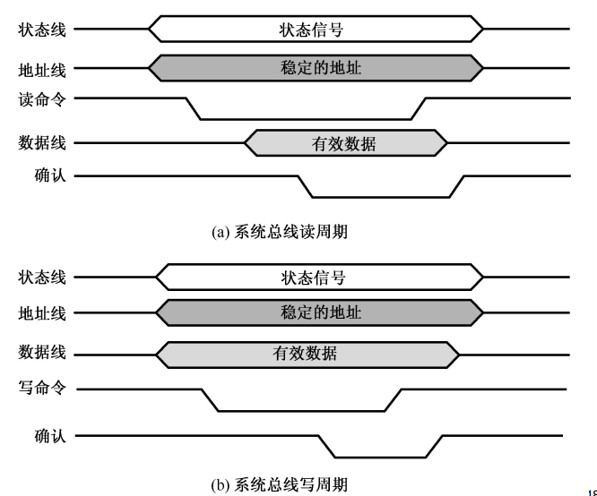

总线系统
总线的概念和结构形态
总线的基本概念
总线是构成计算机系统的互联机构，是系统内各功能不见之间进行信息传送的公共通路。
按照不同的分类依据，总线有着不同的分类结果：
如果按照传送信息分类：
-
地址总线：
单向的三态总线，用于传送地址信息。其的位数决定可执行寻址的范围。
-
数据总线：
双向的三态总线，用于传送数据信息。位数有很多种。
-
控制总线：
传送控制和状态信息。
如果按照连接部件分类的总线
- 内部总线：CPU内部逻辑不见的连接总线
- 局部总线：CPU与其他部件的连接总线，介于CPU内部总线和系统总线之间
- 系统总线：计算机各功能不见的连接总线
- 通信总线（IO总线）：微机系统之间，微机系统和其他设备之间的连接总线
总线的特性
-
物理特性：
总线的位数，总线插头、插座的形状，引脚的排列方式。
-
功能特性
确定每一根总线的名称、定义、功能与逻辑关系等。
-
电器特性
规定每一根总线上信号的传送方向及有效电平范围等内容。
-
时间特性
总线上各信号有效的时序关系。
总线标准
为了保证总线的性能充分发挥以及兼容问题将总线标准化，主要包括总线的各种特性：数据传输率，总线通信协议、仲裁协议等一系列规定和约定。
总线标准的来源可以分为权威组织正式公布的标准和实际存在的工业标准。
按照总线标准设计的总线结构就是通用接口。
总线的性能指标
-
总线宽度
在一次总线操作中，最多可以传送的数据位数。
-
总线周期
一次总线操作所需要的最小间隔时间。
总线周期与总线的时钟频率成反比。
-
总线带宽
单位时间内通过总线的数据位数，总线的数据传输率。
总线的连接方式
总线之间需要通过适配器连接起来。
适配器（接口）：实现高速CPU同低速的外设之间工作速度上的匹配和同步，并完成计算机和外设之间的所有数据传送和控制。
在单机结构中，总线的结构比较多样。
单总线结构
系统内的所有不见均由系统总线连接。

优点：各部件之间可直接进行通信，系统易于扩充。
缺点：总线负载重，如果系统中存在慢速设备，则会产生较大的时间延迟，降低系统的工作效率。
双总线设备
系统内的所有部件均由系统总线连接，在CPU和主存之间再设置一组高速的存储总线。

特点：
- 保持了单总线的优点：简单，易于扩充。
- 减轻了系统总线的工作负担，使CPU工作效率有所提高。
- 增加了硬件成本。
三总线结构
系统总线负责连接CPU、主存、IO通道，存储总线负责连接CPU与主存，IO总线负责连接各个IO适配器。

特点：
- 设置了通道，对外设进行统一的管理，分担了CPU的负担。
- 提高了CPU的工作效率，同时也最大限度提高了外设的工作速度。
- 但是硬件的成本进一步增加。
三总线结构还有下面这种形式：

多总线结构

总线的内部结构
早期的总线内部实际上就是CPU引脚的物理延伸。

CPU是总线上唯一的控制者。这种方式让总线结构和CPU紧密相关，通用性比较差。
现代总线多采用标准总线。标准总线和结构、CPU、技术无关，亦被称作底板总线。

现代总线可以分成四个部分：
- 数据传送总线：地址线、数据线和控制线
- 仲裁总线：总线请求线，总线授权线
- 中断和同步总线：中断请求线，中断认可线
- 公用线：时钟信号，电源
总线结构实例

总线接口
信息的传送方式
- 串行传输：使用一条传输线，采用脉冲传输。成本低廉，但是信息的传送速度慢。
- 并行传输：每一个数据位使用一条传输线，一般使用电位传送。系统总线的信息传送方式。
- 分时传输：总线传输信息的分时复用，共享总线部件对总线的分时复用。
接口的基本概念
接口是IO设备的适配器，CPU和主存，外围设备之间通过总线进行连接的逻辑部件。

接口一般具有下面这些功能：控制，缓冲，状态，转换，中断等。
一个适配器必须要有两个接口：
- 一个同系统总线相连接，采用并行的方式
- 一个同设备相连，可能采用并行或者串行方式
总线的仲裁
连接到总线上的功能模块有主动和被动两种形态：
- 主方可以启动一个总线周期
- 从方只能响应主方请求
- 每次总线操作，只能有一个主方，但是可能存在多个从方
- 主方持续控制总线的时间就是总线占用期
多个功能部件争用总线时，需要由总线仲裁部件选择一个设备使用总线。
总线仲裁有以下两种方式：
- 集中式：由中央仲裁其决定总线使用权的归属
- 分布式：多个仲裁器竞争使用总线
集中式仲裁
-
链式查询方式
采用菊花链的方式连接所有具有总线使用能力的部件，各设备公用一根总线请求信号线
BR，总线授权信号线BG，总线忙信号性BS和中央仲裁器连接。总线授权信号BG串行的从一个接口连接到下一个接口。
在这种控制模式下，设备的优先权同与总线控制器的距离有关系。

使用这种方式的特点是：
- 硬件连接简单，判断优先级容易，设备的增删容易
- 对电路故障敏感，各个部件的优先级固定
-
计数器定时查询方式
在链式查询方式的基础上省去了总线授权信号
BG，增加了计数器和设备地址线，每次收到总线申请，由计数器决定响应的顺序。
在有总线请求时，发出计数值，选择设备查询请求状态，依次查询每一个设备的状态。
在这种仲裁方式下，设备的优先级由计数值决定，计数值为0时同链式查询方式一样，
这种方式的特点是：
- 优先权控制灵活，对电路故障不敏感
- 硬件成本增加，控制复杂度高
-
独立请求方式
每个部件均由独立的请求和响应信号线，由中央仲裁器的部分排队逻辑决定响应顺序。

设备的优先权有中央仲裁器的内部排队逻辑决定
使用这种仲裁方式的特点为：
- 响应时间快，确定优先响应的设备花费的时间少，对优先次序的控制也相当的灵活
- 硬件的复杂程度高
分布式仲裁
分布式仲裁不需要使用中央仲裁器，由分布在各部件中的多个仲裁器竞争使用总线。
每个潜在的主模块都有独立的仲裁器和唯一的仲裁号，通过仲裁总线上仲裁号大小的比较，决定可占用总线的部件。具体的仲裁步骤如下：
- 某部件有总线申请，将其仲裁号发送到共享仲裁总线上
- 每个仲裁器将仲裁总线上得到的号和自己的号相比较
- 如果仲裁总线上的号大，则它的总线请求不予响应，并撤销它的仲裁号
- 最后，获胜者的仲裁号保留在仲裁总线上
分布式仲裁是以优先级仲裁策略为基础的。
总线的定时和数据传送模式
总线的定时
总线的一次信息传送过程，大致可以分成以下五个阶段：
- 请求总线
- 总线仲裁
- 寻址
- 信息传送
- 状态返回/错误报告
定时就是指事件出现在总线上的时序关系，为了同步主方、从方的操作，需要通过定时协定。在数据传送过程中，有下面几种定时协定：
- 同步定时协定
- 异步定时协定
- 半同步定时协定
- 周期分裂式总线协定
下面介绍前两种定时协定：
-
同步定时协议：

优点：简单，传输的频率高
缺点：只适用于总线长度短，功能模块存取时间接近的场景
-
异步定时协定

优点：总线周期长度可变，允许快慢速功能模块都连接到同一总线上
缺点：增加了总线的复杂性和成本
总线数据传送模式

读、写操作
读操作是由从方到主方的数据传输，写操作是从主方到从方的大数据传送。
一般的，主方先以一个总线周期发送命令和从方地址，经过一定的演示再开始数据传送总线周期。
为了提高总线利用效率，减少延时损失，主方在完成寻址总线周期后可让出总线控制权，让其他主方完成更急迫的操作，然后再重新竞争总线控制权，完成数据传送总线周期。
块传送操作
只需给定块的起始地址，然后对固定块长度的数据一个接一个的读出和写入。CPU读取存储器的块传送操作常称作猝发是传送。块的长度一般固定为数据线宽度（存储器字长）的4倍。
写后读、读修改写操作
两种组合操作模式，只给出地址一次，或者进行先写后读操作，或者进行先读后写操作。先写后读操作常常用于校验目的，先读后写操作用于多程序系统中对于共享存储资源的保护。
块传送操作和写后读、读修改写操作都是主方控制总线直到整个操作结束。
广播、广集操作
广播、广集操作是一个较为特殊的操作。一般来说，总线只允许一个主方和一个从方之间进行通信，但是一些总线允许一个主方对多个从方进行操作。如果是对于多个从方进行写操作，这种操作称为广播，如果是从多个从方读取，并在总线上完成and或者or操作再被读取，这种操作称为广集。广集操作在检测多个中断源时非常好用。
PCI总线和PCIe总线
多总线结构

Host总线
有CPU总线，系统总线，主存总线，前端总线等等名称。
连接北桥芯片和CPU之间的信息通路，是一个64位数据线和32位地址线的同步总线。
PCI总线
连接各种高速的PCI设备，是一个与处理器无关的高速外围总线。
采用同步时序协议和集中式仲裁策略，并且可以自动配置。PCI设备可以是主设备，也可以是从设备，或者兼而有之。
LAGACY总线
此处疑有讹误，应为LEGACY总线。
一般是ISA，EISA和MCA这类性能较低的传统总线，在这里的主要意义是提供向前的兼容性。
PCI总线中的桥
桥起着将两条总线连接起来的作用。桥同时也是一个总线转换部件，将一条总线上的地址空间映射到另一条总线的地址空间中，使用两条总线上的设备可以直接通信。
PCI 总线信号
PCI总线的基本传输机制是猝发式传输。
在进行写操作时，桥把上层总线的写周期缓存起来，以后再在下层总线上生成写周期，即写延迟。当进行读操作时，桥可以早于上层总线，直接在下层总线上预读。无论延迟写还是预读，桥的作用可使所有的存取都按照CPU的要求出现在总线上。
PCI总线仲裁
PCI总线采用集中式仲裁方式。每个设备都有总线请求nREQ线和总线授权nGNT线和中央仲裁器连接，中央仲裁器根据算法对设备的申请做出仲裁。
PCIe总线
对于PCI总线的扩展，提供了更快的传输速度，在软件和应用上兼容PCI设备。
PCIe总线相对于PCI总线做出了如下的改进：
- 高速差分传输
- 串行传输
- 全双工端到端传输
- 基于多通道的数据传递方式
- 基于多通道的数据传递方式
- 基于数据包的传输